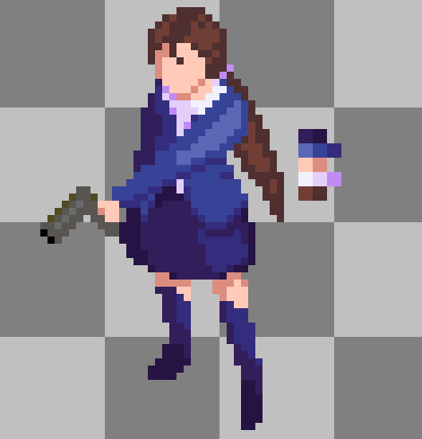

Ultra Vires Insectum
Isometric pixel art roguelike written in Lua with LOVE2D
Description
Ultra Vires Insectum is an anime style isometric roguelike set in a glitchy city overrun by alienated bugs. You play as a cast of colorful, powerful anime girls who dive into the streets to wipe out the infestation, scavenging items and powerups as they go.
Gameplay is fast, chaotic and skill-driven with different item combinations to introduce randomness to the whole picture.
Each area on the map of the city, is methaphorically represented as a different computer part. And each objective is represented as an error depending in which part of the map it is located.
Lessons learned
Unfortunately, it ended up being an abandoned unfinished project as the team slowly drifted away from it for multiple reasons, which were very important lessons.
Main problem was the overall design direction. Isometric perspective was chosen because we all wanted to do it and thought it would be "cool". But it was a completely wrong design choice for this game. 360 degree rotations, fast paced game, isometric perspective and pixel art turned out to be a completely wrong mix.
We wanted 360 degree rotations with mouse aiming and shooting, but our isometric perspective allows us for basically 2 directions and two mirros of those directions, which is very restricting, and doesn't translate well with animation sprites. Sprites were supposed to be just rendered sprite frames, but arm holding out a gun would actually be a separate object, which would freely rotate in 360 degrees so it could follow mouse aim properly. To make it worse, rotating that element which is drawn in pixel art would just look horrible and nothing like we had in mind. And drawing such rotations per frame in pixel art was a nightmare. I truly believe that is what killed our project.
Programming accomplishments
Even though project got abandoned, I loved programming it. I was the only programmer on the team so I had a lot of freedom in my design approaches. I decided to use LOVE2D framework, which uses Lua as it's scripting language, and it's built on top of OpenGL.
It's a fully 2d framework, so I thought it would be a fun challenge to perform transformations into an isometric perspective. In addition to that, I wanted to provide an additional challenge for myself, which was to use functional design approach, and all I ever did up until this point was OOP.
So I ended up making a coordinate transformation system, because main game logic was done fully in 2d, but it was just transformed into isometric coordinates before the screen draw.
A custom sprite animator which handles asset imports, splitting them into frames, and playing correct animation based on the player's state and orientation.
A Tiled map integration, where you could just use Tiled to design a map, and output it to a .lua file, which the map drawer can interpret and draw in the correct layer order.
Z-sorting for correct entity layering, so the draw order of objects is right.
Basic collision detection was implemented, and that's where the project started dying.
I basically used 0 external libraries and have written everyting single handedly from scratch.
Technologies used
- Lua
- Love2D
- Tiled
Contributions
- Isometric coordinate transformation system
- Z-sorting for correct entity layering
- Tiled map integration for custom map drawer
- Entity animation handler
- Collision detection
- Bug fixing

Example
Team
- p - Programming
- Elena - Pixel art
- Sketch- Pixel art
- Joe - Concept art
- Sash - Music and sfx